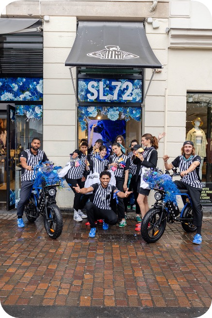
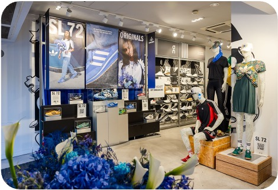

Objective
Back to projects

Adidas x Foot Locker · 2024
Adidas x Foot Locker - SL72
360° campaign, street marketing, drive-to-store
Project completed as part of Lucie Ramon's previous professional background.

Adidas x Foot Locker360° campaign, street marketing, drive-to-storeExperience leadershipImage proof
Adidas x Foot Locker360° campaign, street marketing, drive-to-storeExperience leadershipImage proof
Case study
Context
For the Paris 2024 Olympic Games, Adidas and Foot Locker wanted to reposition the SL72 around victories, big or everyday.
Lucie's role
- Designed and produced the 360° campaign around the SL72.
- Organized an exclusive PR event with Theodort.
- Rolled out a street marketing operation in Paris.
- Developed exclusive merchandising, immersive scenography and a drive-to-store contest.
Visual material


Key figures
+1,200 visitors over 4 days
+850 contest entries
+430 SL72 pairs sold
Sold-out Meet & Greet with Theodort: +150 fans
+2M cumulative social reach
+300 victory bouquets distributed
Average engagement rate: 7.4%
For your brand
Turn a product launch into a retail, event and influencer activation.
Studio Madame-L connects concept, casting, field production, content and performance measurement to build an experience that attracts audiences and supports traffic.
Next reference